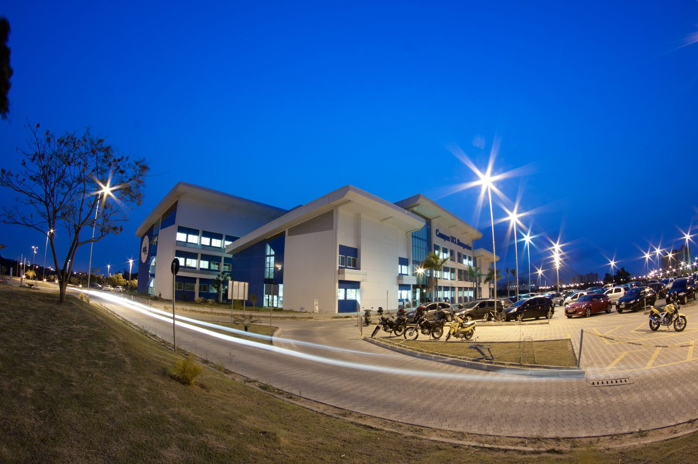

-
MARIA ÂNGELA LOYOLA DE OLIVEIRA
- Engenheira Mecânica (UFES), Mestre em Engenharia Metalúrgica e Materiais (PUC- RJ), Doutora em Ciências dos Materiais (Ecole des Mines de Nancy – França). Pesquisadora na City London Universty como bolsista CNPq –RHAE em projeto CST/UFES. Professora na UFES até 2001, foi chefe de departamento, fundadora e coordenadora do curso de mestrado em Engenharia Mecânica, realizou várias consultorias na área de análise de falhas e publicou 36 artigos em anais de congressos ou revistas nacionais e internacionais. Foi pesquisadora de produtividade em pesquisa do CNPq de 2001 a 2003. Atualmente é diretora administrativa e acadêmica da UCL. CARLOS ALBERTO SOUZA DE OLIVEIRA
- Engenheiro Mecânico (UFES-1975), Mestre em Engenharia da Produção (PUCfesso-Rio- 1991), DEA em Génie des Systèmes Industriels (INPL-França – 1992). Iniciou a vida profissional na Christiani Nielsen (1969) e foi admitido na CVRD em 1970, no Porto de Tubarão, onde exerceu funções de engenheiro, chefe de equipe e gerente da divisão de métodos. No Rio de Janeiro e na França, assessorou a Superintendência de Desenvolvimento de Negócios (1989-1995). Foi professor na Escola Técnica Federal (1977) e no Centro Tecnológico da UFES (1987- 1998). Exerceu a direção do Centro Educacional Valparaíso (1995-1998), do qual é fundador, aplicando o modelo de planejamento estratégico desenvolvido no período de formação na França e que lhe permitiu idealizar e propor o projeto UCL – Faculdade do Centro Leste. Atualmente é diretor de planejamento da UCL. BRUNO LOYOLA DEL CARO
- Possui graduação em PEDAGOGIA pela Universidade Federal do Espírito Santo (UFES – 2003) e graduação em DIREITO pelo Centro Universitário do Espírito Santo (2003). Especialização em Direito Educacional pela UNIDADE EDUCACIONAL DE ENSINO PESQUISA EXTENSÃO DO ESPIRITO SANTO em 2005. Mestrado em Direito (Teoria do Estado e Direito Constitucional) pela Pontifícia Universidade Católica do Rio de Janeiro (PUC-RIO – 2014) e atual Diretor Financeiro da UCL. SANDRO MADUREIRA LOBATO
- Engenheiro Civil (UFES), Mestre em Engenharia de Produção (PUC-RJ). Atuou como coordenador de Pós-Graduação, Pesquisa e Extensão da UCL de 2002 a 2005. Atual Representante da Direção para o Prodfor – Programa de Qualificação de Fornecedores, Diretor de Marketing, Professor de Graduação e Pós-Graduação (nas áreas de Planejamento, Administração da Produção, Qualidade e Marketing) da UCL – Faculdade do Centro Leste.
